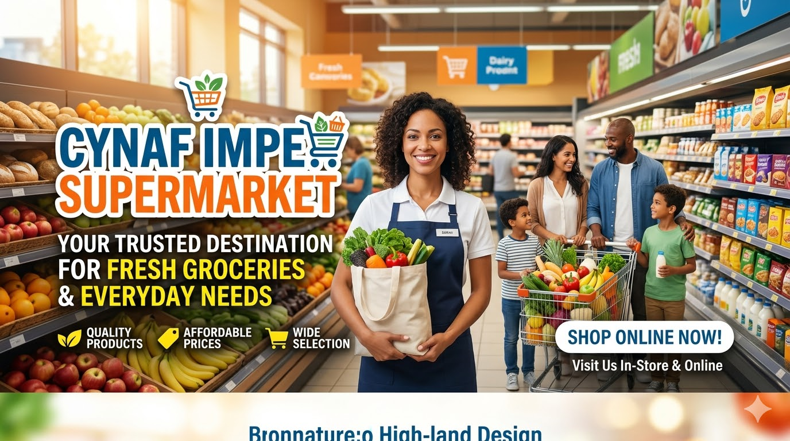
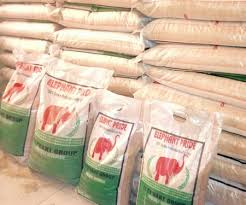
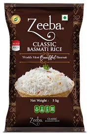

Welcome to Cynaf impex Supermarket
Your one-stop shop for groceries and household items.

Grocery Supermarket is a highly functional website template tailored for grocery stores
, supermarkets, and convenience stores. Its user-friendly design caters to business owners
in the retail industry, providing a platform to effectively showcase products and engage with
customers online. Designed with the retail sector in mind, the theme offers a clean and organized
layout that mirrors the aisles of a supermarket. You can easily create ecommerce websites for organic
foods, daily groceries, vegetables, fruits, etc.Its visually appealing design features spacious sections
for product categories, special promotions, featured items, and customer testimonials. The color palette and
typography choices create a sense of familiarity and convenience, evoking the essence of a physical retail environment.
Grocery Supermarket is equipped with a range of tools to enhance the shopping experience. Its responsive design ensures seamless
navigation across devices, allowing customers to browse and shop effortlessly from their smartphones or tablets.
The integration of an intuitive product catalog with filters simplifies product discovery, while a shopping cart
and checkout system streamline the purchasing process. The Grocery Supermarket theme offers convenient inventory management,
allowing store owners to update stock availability and prices in real time. Integrated customer reviews and ratings build trust
and influence purchase decisions.
Additionally, the theme can support various payment gateways, providing customers with flexible payment options.

Rice
oil

Rice